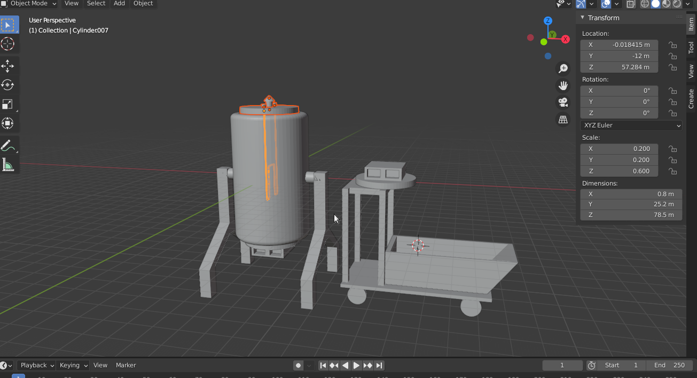
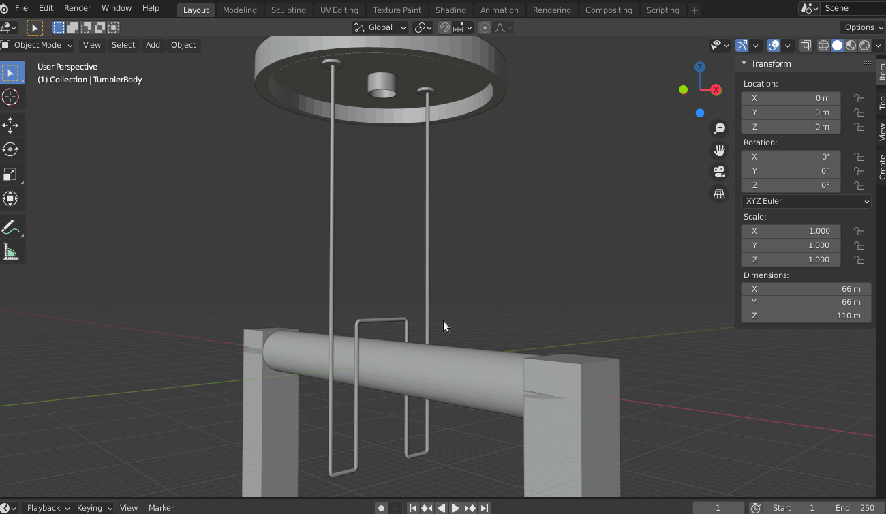
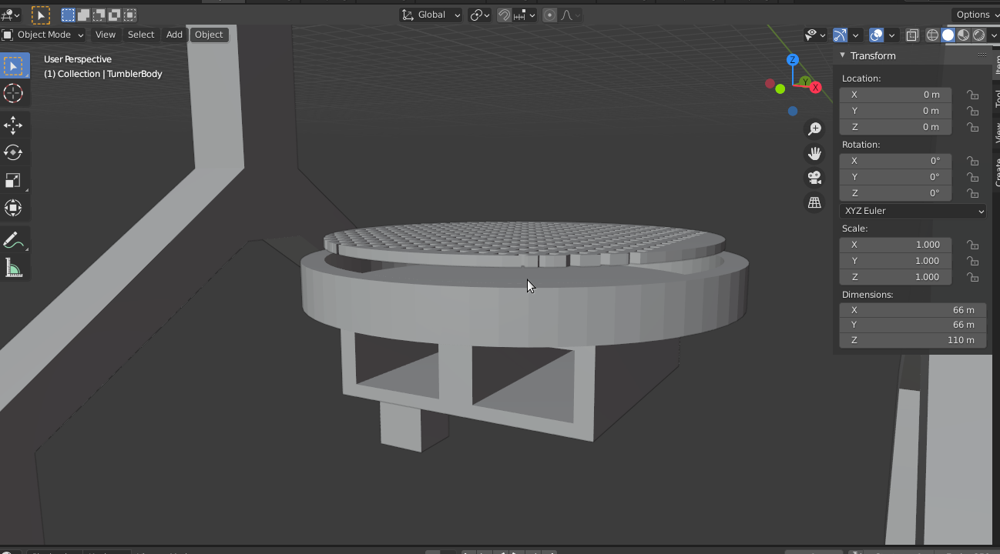
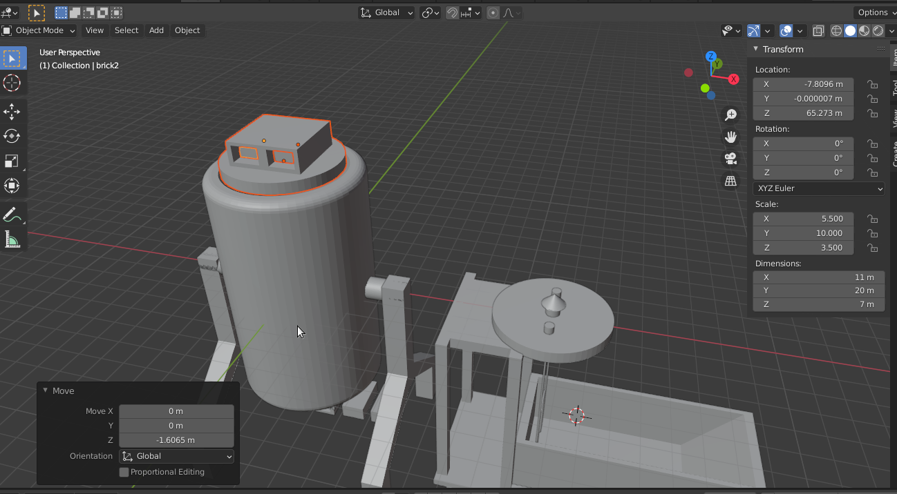
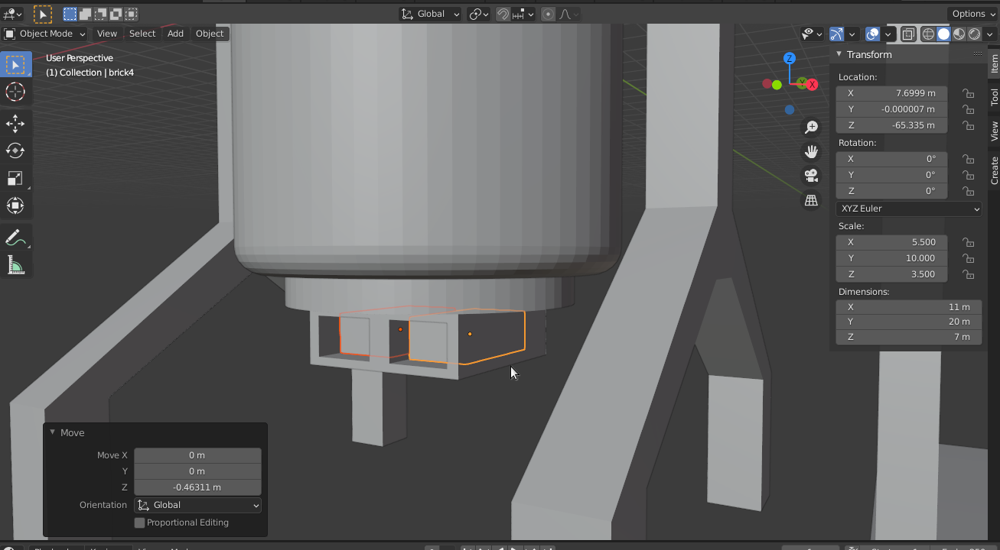
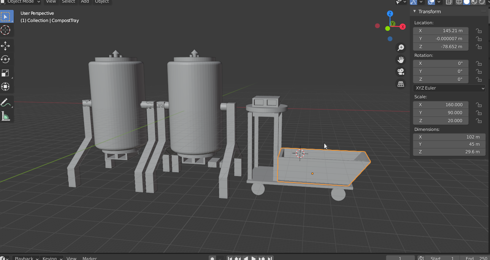

Foundry X : Special agricultural Operation
堆肥反應器草案
基本結構

要進行堆肥產熱需要兩種基本的工作設備：堆肥反應器（上圖左）與工作車（上圖右）
堆肥反應器可以進行好氧反應並且把熱經由導熱管輸出到目標設施，
工作車可以協助管理員搬運堆肥材料和成熟的堆肥，在翻堆的流程也有幫助
反應器外觀

堆肥反應器的主體是一個可以耐酸鹼的圓筒，被一個支架懸吊在地面上。
上方蓋子包括熱交換管路的接口，以及一個被圓錐頂保護的換氣口
反應器內部結構

上蓋的熱交換接口連接一條金屬材質的熱交換管路，這個管路會被用鋁箔包裹以避免腐蝕。
金屬管路的W型結構讓它可以深入堆肥核心，擷取最高溫的熱能。

堆肥槽的下方蓋子有一個網狀構造，讓堆肥產生的多餘水分可以流過，避免底部積水而產生厭氧反應
翻堆工作流程

在為反應器進行翻堆時，管理員可以活用他的工作推車，先把原本的反應器上蓋放置在推車上，
接下來把原本放在推車上的翻堆用上蓋安裝在筒身，這個翻堆用上蓋安裝了兩個磚塊作為佩重，這會讓翻堆的工作變得更加容易，

下方的蓋子也有兩個塞入磚塊的溝槽，和上蓋形成對稱的佩重，
這些磚塊可以被放在工作推車上移動，因此無論單一個設施裡有多少個堆肥筒，翻堆行動只需要一個翻堆用上蓋和四塊磚塊。
推薦的基本工作單元

由於堆肥反應在堆肥材料發酵接近完成時會漸漸衰退，產熱能力將會隨之下降，
為了維持穩定的熱能輸出，建議一個設施至少要架設兩個堆肥反應器，並且錯開兩者的反應起始時間，
至少要有一個工作推車來協助設施管理員執行工作。